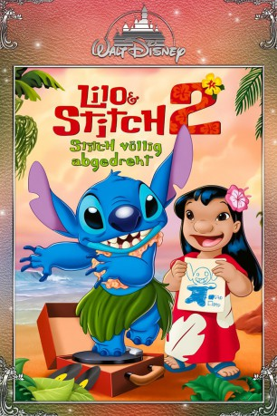

gesehen am 14.04.2017
gesehen am 14.04.2017Alternativ: Lilo & Stitch 2: Stitch Has a Glitch gesehen am 14.04.2017
 
 IMDB-Wertung: 6.3 / 10
IMDB-Wertung: 6.3 / 10  Metascore:
Metascore: 
Taking place between the original "Lilo and Stitch" and "Stitch: The Movie", "Lilo and Stitch 2" finds the rowdy extraterrestrial getting used to life with his new ohana. However, a malfunction in the ultimate creation of Dr. Jumba soon emerges, which reinstates his destructive programming and threatens to both ruin his friendship with Lilo and to short him out for good!
Jahr: 2005
Dauer: 68 Minuten
FSK:
Land: USA Studio: Walt Disney Home EntertainmentTonspuren: DD2.0 - ,
Untertitel:
Auflösung: 1080p (1920x1080) Größe: 2928 MB
Genre: Drama, Sci-Fi, Komödie, Animation/Trick, Familie
Regisseur: Michael LaBash, Tony Leondis
Drehbuch: Tony Leondis, Michael LaBash, Eddie Guzelian, Alexa Junge, Michael Lucker
Soundtrack: Joel McNeely
Darsteller:
 Chris Sanders als Stitch
Chris Sanders als Stitch Dakota Fanning als Lilo Pelekai
Dakota Fanning als Lilo Pelekai Tia Carrere als Nani
Tia Carrere als Nani David Ogden Stiers als Dr. Jumba Jookiba
David Ogden Stiers als Dr. Jumba Jookiba Kevin McDonald als Pleakley
Kevin McDonald als Pleakley Matt Corboy als Additional Voices
Matt Corboy als Additional Voices Jennifer Hale als Additional Voices
Jennifer Hale als Additional Voices Liliana Mumy als Myrtle
Liliana Mumy als MyrtleDatei: X:\Kinder Disney HD\Lilo & Stitch\Lilo und Stitch 2 - Völlig abgedreht (2005, FSK, 1920x1080).mkv seit 25.09.2015
Festplatte: Kinder-Filme+Trick
 Es gibt insgesamt 8 Filme in der Gruppe 'Kinder Disney HD\Lilo & Stitch'
Es gibt insgesamt 8 Filme in der Gruppe 'Kinder Disney HD\Lilo & Stitch'